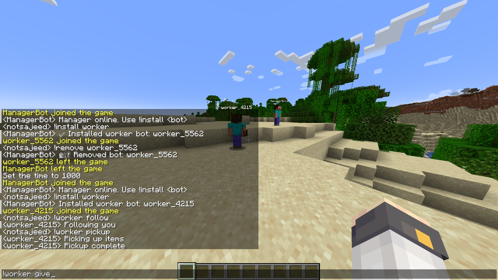

MCBots
| Type | Multi-Agent System |
| Status | Experimental |
| Environment | Minecraft LAN |
| Framework | Mineflayer |
| Language | Node.js |
| Architecture | Manager / Worker Model |
| Bot Count | 3 Active Bots |
| Repository | GitHub |
Overview
MCBots is an experimental multi-bot orchestration system for Minecraft built entirely using Mineflayer.
The project focuses on managing multiple specialized bots inside a single-player Minecraft world opened to LAN without relying on plugins, mods, or dedicated servers.
Instead of creating large autonomous swarms, the system explores controlled and resource-aware orchestration through a minimal three-bot structure:
- 1 Manager Bot
- 1 Worker Bot
- 1 Miner Bot
All bots join the world as standard Minecraft clients through Mineflayer.
Architecture
The system follows a centralized orchestration model where a single manager bot controls all role-based agents.
Minecraft (Singleplayer → LAN)
↑
LAN Port / IP
↑
Manager Bot
↑
Worker Bot / Miner Bot
The manager bot remains online continuously and acts as the command layer responsible for spawning, removing, and coordinating other bots.
Bot Roles
Each bot operates under a constrained specialized role.
| Role | Purpose |
|---|---|
| Manager | Controls orchestration and command handling |
| Worker | General-purpose task execution |
| Miner | Mining-related task execution |
Bots remain idle by default and only activate during direct task execution.
Constraints
The system was intentionally designed around strict operational limits to maintain stability inside LAN worlds.
- No autonomous roaming
- No background scanning
- No continuous pathfinding
- Command-driven execution only
- Time-bounded actions
- Deterministic task behavior
The project prioritizes resource governance and controlled orchestration rather than large-scale automation.
Supported Concepts
- Multi-agent systems
- Role specialization
- Admission control
- Graceful bot lifecycle management
- Resource-aware orchestration
Implementation
The project is implemented entirely using Mineflayer without external plugins or server modifications.
All orchestration logic operates through chat commands and controlled task dispatching inside the LAN environment.
- Node.js
- Mineflayer
- Minecraft Java Edition
Screenshots

Development Notes
The project was built primarily as an exploration of Mineflayer internals, Minecraft protocol behavior, and safe multi-agent coordination inside constrained environments.
A major focus of development involved understanding the practical limits of LAN-hosted worlds and designing orchestration rules that avoid instability and disconnections.
Future Direction
- Additional specialized bot roles
- Bot permission systems
- Status and health monitoring
- Dedicated orchestration dashboard
- Migration toward dedicated servers